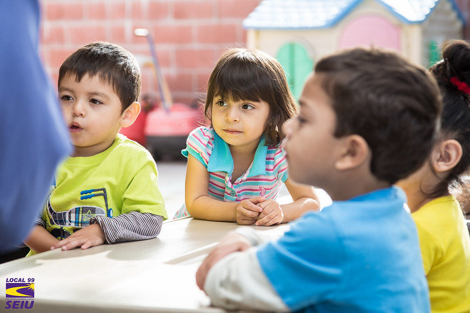

Sok kismama érzi úgy, hogy miután megszületik a babája, onnantól kezdve ki sem tud mozdulni otthonról. Vannak szerencsések, akiknek van segítségük, de vannak olyanok, akiknek messze laknak a szülei, a párja sokat dolgozik, így a nap 24 óráját a babájájukkal töltik. Csak egy kávé a barátnőnkkel, egy gyors hajvágás – mindenkinek szüksége van egy kis kikapcsolódásra.
Ezek a gondolatok motoszkáltak két szociálpedagógiát végzett és már több éve bébiszitterkedő fiatal fejében, amikor 2006 nyarán megalapítottuk a Menő manót.
Több, mint egyszerű gyermekmegőrző: egy folyamatosan bővülő család, ahol mindenki figyel a másikra. A gyerekek szerető és szakértő kezekben vannak és igényeiket messzemenően figyelembe veszik. A szülőkkel való állandó kapcsolattartás és a gyermek életkorának megfelelő játékos fejlesztés nagyon fontos a lelkes csapat számára.
A családias hangulat és az így kialakult bizalmi kapcsolatok eredményeképpen rendszeresen biztosít gyermekfelügyeletet kiállításokon, nagyszabású családi eseményeken és babazsúrokon is. Jelenleg Budapesten a Mammut mellett és Újpesten működik Babapihenő. Szeretettel várunk minden érdeklődőt, aki segítő útmutatásaink mentén a szellemiségünket továbbvinné az ország bármely részén.
A kisgyermekek életében, testi-lelki fejlődésükben meghatározó szerepe van a magánbölcsődében eltöltött éveknek. Családi bölcsőde nagy előnye pont gyermekközpontúság és kis létszámú csoportjaink, ahol minden gyermekre jut elegendő idő és figyelem az egyéni igényekre való tekintettel.
Fontosnak tartjuk az összetartó közösséget, az eltérő korosztályok közötti együttműködést és jó kapcsolatot, melynek céljából csoportjaink vegyes korcsoportúak.
A magánbölcsőde munkatársai képzett és tapasztalt szakemberekként biztosítják a szükséges gondoskodást, a jó hangulatot minden gyermek számára.
A bölcsődei nevelés a családdal együtt kell, hogy szolgálja a gyermek fejlődését, ezért nagyon fontos a családokkal való együttműködés. Ez a napi személyes találkozásokkal, közös programokkal, ünnepeink segítségével valósul meg.
A foglalkozásokon és tevékenységeken keresztül, a gyermekek felfedeznek, kis alkotásokat készítenek, játszanak, dalokat hallgatnak, mondókáznak, a csapat mesél nekik, bábozik, ily módon segítve testük képességeit és a különböző anyagok megismerését.
A családi bölcsőde Budapesten a gyermek élettere, ahol napjaik kisebb nagyobb részét töltik. Ennek megfelelően nagy hangsúlyt fektetünk a megfelelő környezet kialakítására, melynek legfőbb jellemzői az otthonosság, tisztaság, rend, szervezettség, esztétikusság.
Mi a gyengéd, ún. szülős beszoktatás hívei vagyunk. Ha beíratja magánbölcsődénkbe gyermekét, akkor fontos, hogy Ön személyesen is jelen legyen a kezdeti, ún. beszoktatási időszakban. Így Ön is gyermeke mellett lehet, amíg ő megszokja az új környezetet. A beszoktatás ideje alatt Ön is megismerheti a bölcsinket és az óvónőinket, így meggyőződhet arról, hogy jó kezekben hagyja gyermekét.
A családi bölcsőde árainak kiszámítása attól is függ, hogy a szülők heti hány napon, illetve hány órán keresztül igénylik a segítségünket. Lehetőség van minden hétköznap járni magánbölcsődénkbe Budapesten, ezáltal gyermeke napról napra tanulhat valami újat és hasznosat. Mindemellett arra is van mód, melyet sokan kedvelnek, hogy gyermekük csak hetente 3-5 alkalommal, akár fél napra jöjjön el családi bölcsődénkbe.